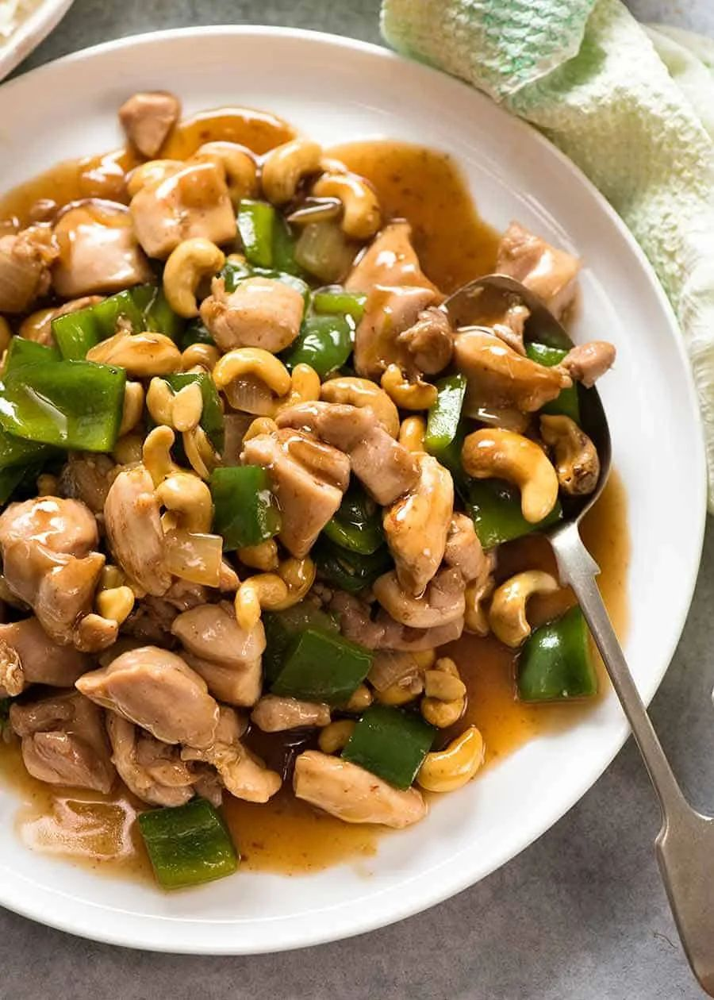

Chinese Cashew Chicken

- Meal
- Dinner
- Serves
- 6
- Protein
- chicken
- Cook
- stovetop · 20 min active / 25 min total · easy
- Make-ahead / leftovers
- no / yes
- Mediterranean
- yes
- WW tier
- moderate
- Status
- Trying out (probation)
RecipeTin Eats' takeout-style cashew chicken — thigh pieces, onion, green pepper, a glossy soy sauce, and a big handful of cashews. Six minutes in the wok once things are chopped. Kid-friendly, no chili.
Ingredients
Sauce
- 1 1/2 Tbsp cornstarch
- 1/3 cup soy sauce (scant)
- 2 Tbsp mirin or dry sherry (or 1 Tbsp rice vinegar + 1 tsp sugar)
- 1/3 cup hoisin sauce (see Notes — replaces oyster sauce)
- 1 Tbsp sesame oil
- Dash of black pepper
- 9 Tbsp (generous 1/2 cup) water
Stir-fry
- 1.5 lb boneless skinless chicken thighs, cut into 1-inch pieces
- 3 Tbsp vegetable or peanut oil
- 3 garlic cloves, minced
- 1 onion, cut into 3/4-inch pieces
- 2 green bell peppers, cut into 3/4-inch pieces
- 1 cup roasted unsalted cashews
- Brown rice, cooked, to serve (house rule: always brown)
Method
- Mix cornstarch and soy sauce until smooth, then stir in mirin, hoisin, sesame oil, and pepper.
- Toss 3 Tbsp of the sauce with the chicken. Let it sit 10 minutes while you chop.
- Heat the oil in a wok or large heavy skillet over high heat. Add garlic and onion; cook 1 minute.
- Add the chicken and cook 2 minutes. Add the peppers; cook 1 minute. (Large pan or two batches — crowding steams it.)
- Add the remaining sauce and the water. Simmer, stirring, about 1 minute until glossy and the chicken is cooked through.
- Stir in the cashews and pull it off the heat. Serve over brown rice.
Notes
- Scaled ×1.5 from RecipeTin's 1 lb chicken / serves 4.
- Fish-allergy note: the source uses oyster sauce. Oyster sauce is shellfish-based, and the family treats shellfish nights as fish nights for the fish-allergic eater — so this card swaps in hoisin to keep it an all-family dinner. Don't reintroduce oyster sauce without checking.
- Not Copycat Panda Teriyaki Chicken (sweet honey-soy glaze, no veg) — this is a savory stir-fry with peppers, onion, and cashews.
- Cashews: Sam's bulk tub is cheapest; they double as snack nuts.
- Mediterranean: technically 3 of 4 (poultry, vegetables, brown rice); stir-fry oil isn't olive oil. Counts, but it's a soft yes. moderate for the nuts + sweet sauce.